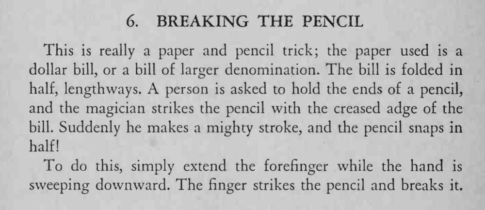

观众双手横握铅笔，魔术师用一张折成长条的纸币猛砍下去，铅笔应声断成两截。
食指要快而准地敲在铅笔中点，纸币则贴着铅笔上方掠过，别让观众看清是手指发力。

This is really a paper and pencil trick; the paper used is a dollar bill, or a bill of larger denomination. The bill is folded in half, lengthways. person is asked to hold the ends of a pencil, and the magician strikes the pencil with the creased adge of the bill. Suddenly he makes a mighty stroke, and the pencil snaps in half! To do this, simply extend the forefinger while the hand is sweeping downward. The finger strikes the pencil and breaks it.